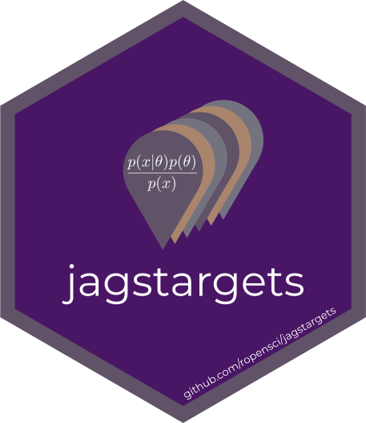

Changelog
Source:NEWS.md
jagstargets 1.1.0.9001 (development)
- Add the new
descriptionarguments oftar_target()(`targets >= 1.5.1.9001). - Append model file information to the target descriptions using
tar_map()(tarchetypes>= 0.7.12.9001).
jagstargets 1.1.0
CRAN release: 2023-01-06
- Add a
transformargument totar_jags_rep()to support simulation-based calibration.
jagstargets 1.0.4
CRAN release: 2022-10-31
- Migrate docs away from deprecated
targets::tar_path(). - Implement resilient reps-specific seeds in the
tar_jags_rep*()functions.
jagstargets 1.0.3
CRAN release: 2022-06-24
- Append a new
.dataset_idcolumn to target outputs to aid in model comparisons across the same datasets.